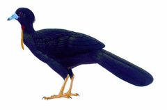
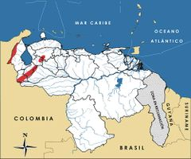

Aburria aburri
| Pava negra | |
|---|---|
|  | |
| Riesgo de extinción | |
 Vulnerable (UICN) | |
| Clasificación científica | |
| Reino: | Animalia |
| Filo: | Chordata |
| Clase: | Aves |
| Orden: | Galliformes |
| Familia: | Cracidae |
| Género: | Aburria |
| Especie: | Aburria aburri |
| Nombre binomial | |
|
Aburria aburri Lesson, 1828 | |
| Distribución | |
|
 Mapa de distribución de Aburria aburri | |
Contenido
Información de Evaluación
- Categoría y Criterio Regional: Vulnerable A2cd
- Fecha de Evaluación Regional: 2015
- Evaluadores: Jesús Morales-Campos y Ariany García-Rawlins
- Categoría y Criterio Global: Casi Amenazada
Justificación
Evaluaciones Previas
1999: En Peligro (EN)
2008: Vulnerable (VU)
Información General
Nombres comunes
Pava negra, gualí, guayón, pava de barbilla, pava aburrida, pava aburria, Wattled Guan.
Notas taxonómicas
Sinónimos
Descripción
Crácido de tamaño mediano que mide entre 70 y 75 cm de longitud. Se caracteriza por sus hábitos ruidosos y por una carúncula colgante de color amarillento de aproximadamente cuatro centímetros de largo, localizada en la parte inferior de la garganta, esta última desprovista de plumas. El color de su plumaje es negro verdoso, brillante y todo uniforme; tiene el pico azul cobalto muy contrastante con el plumaje. Sus patas de color amarillo pálido son cortas. Es de hábitos arborícolas y diurnos. En grupos de hasta ocho individuos busca alimento en los árboles con frutos en los estratos medio y alto del bosque.
Distribución
Es el único miembro de un género monotípico que se distribuye en forma dispersa en Venezuela, en las tres cordilleras de Colombia, en el este y noroccidente de Ecuador, y en el centro y sur de Perú (Hilty y Brown 1986, Granizo et al. 2002, Renjifo et al. 2002). En nuestro país se restringe a algunas localidades de la sierra de Perijá en el estado Zulia, y de la cordillera de los Andes al sur de Táchira, Mérida, Trujillo y Lara (Phelps Jr. y Meyer de Schauensee 1979). Habita en bosques húmedos y nublados, casi siempre en las montañas pero en ocasiones también en zonas más bajas, entre 500 y 1800 m (incluso hasta 2500 m) de altitud.
- Sistema: Terrestre
- Bioregión:
- Intervalo altitudinal (m): 700-2100
- Endémica: No
Situación
Aunque Aburria aburri está considerada con alta prioridad para la conservación, es una de las especies de crácidos menos estudiada y la información acerca de su situación poblacional es escasa o nula (Rodríguez, J. P. et al. 2004b). Es probable que el tamaño de su área de distribución actual sea bastante inferior y ocupa alrededor de 50% de la pasada. En la actualidad en apariencia su cifra poblacional se encuentra decreciendo, y varios autores y cazadores indican que en algunas localidades es menos común que Pauxi pauxi (paují copete de piedra). Se estima que varias poblaciones podrían encontrarse extintas o muy amenazadas, aunque en algunas áreas todavía es común, tal como ocurre en la sierra de Perijá (Porras de Guzmán y Arriaga Uzcátegui 1981, Silva, J. L. y Strahl 1991, Silva y Strahl, J. L. 1996). A pesar de la falta de información concluyente, se estima que se encuentra extinta o casi extinta en algunas zonas vitales, mientras que en otras sus tamaños poblacionales son pequeños y con alta presión de cacería (Rodríguez, J. P. y Rojas-Suárez 2003). Hoy en día es por lo general escasa y local. En el ámbito global se le considera Casi Amenazada, y se calcula una población de 12.500 a 15.000 individuos, de los cuales una pequeña fracción correspondería a Venezuela (Collar et al. 1992, BirdLife International 2000, IUCN 2014). En Colombia, aunque es común localmente, fue clasificada como Casi Amenazada (Renjifo et al. 2002) hasta el 2014 cuando pasó a Preocupación Menor (Renjifo et al. 2014). En Ecuador la especie se considera Vulnerable con una población estimada de 2500 a 5000 ejemplares (Hilty y Brown 1986, Collar et al. 1992, BirdLife International 2000, Granizo et al. 2002).
- EOO (km2): 1880000
- AOO (km2): Temporalmente sin Información
- Tendencia Poblacional: Decreciendo
Amenazas
La destrucción del hábitat por la deforestación de los bosques y su utilización como fuente alimenticia, constituyen sus principales amenazas dentro de todo su intervalo altitudinal en los Andes. En Colombia y Ecuador la principal causa de su situación actual es la conversión de los bosques con fines agrícolas, aunque se le reporta en especial vulnerable a la cacería por sus fuertes vocalizaciones y su tendencia a permanecer en lo alto de las ramas (Hilty y Brown 1986, Granizo et al. 2002, Renjifo et al. 2002).
Conservación
En Venezuela se establece su veda indefinida y es declarada Especie en Peligro de Extinción en 1996 (Venezuela 1996a, Venezuela 1996b). Se encuentra en los parques nacionales Sierra de Perijá, Sierra de La Culata, Sierra Nevada y Yacambú, entre otros. Hace varios años se desarrollaron algunos programas de educación ambiental dirigidos a los cazadores en las inmediaciones de áreas protegidas, pero esas iniciativas no han tenido continuidad (Silva y Strahl, J. L. 1991, Silva, J. L. y Strahl 1996). Aburria aburri requiere de atención inmediata, incluyendo estudios poblacionales y de distribución geográfica pasada y actual. Se debe continuar con los programas de educación ambiental e iniciar planes de manejo de poblaciones silvestres. Su cría en cautiverio podría ser una opción adicional para su conservación (Rodríguez, J. P. y Rojas-Suárez 2003).
Autorías
Autores originales
Franklin Rojas-Suárez, Christopher J. Sharpe, David Ascanio y Miguel Lentino
Colaboradores
Ilustrador
Robin Restall
Referencias
- BirdLife International (2000). Threatened Birds of the World. The official source for birds on the IUCN Red List. Lynx Edicions. Barcelona, España. 864 pp.
- Collar, N. J., Gonzaga, L. P., Krabbe, K., Nieto, A. M., Naranjo, L. G., Parker III, T. A. y Wege, D. C. (1992). Threatened Birds of the Americas. The ICBP/IUCN Red Data Book (3rd ed. part 2). International Council for Bird Preservation. Cambridge. 1150 pp.
- Granizo, T., Pacheco, C., Ribadeneira, M. B., Guerrero, M. y Suárez, L. (2002). Libro Rojo de las Aves del Ecuador. SIMBIO, Conservación Internacional, EcoCiencia, Ministerio del Ambiente, UICN. Quito, Ecuador.
- Hilty, S. L. y Brown, W. L. (1986). A Guide to the Birds of Colombia. Princeton University Press. 836 pp.
- IUCN (2014). The IUCN Red List of Threatened Species. Version 2014.3. Accesible en www.iucnredlist.org.
- Phelps Jr., W. H. y Meyer de Schauensee, R. (1979). Una guía de las Aves de Venezuela. Gráficas Armitano. Caracas. 484 pp.
- Porras de Guzmán, J. y Arriaga Uzcátegui, I. (1981). Consideraciones sobre el status de la conservación de las crácidos en Venezuela. Memorias Primer Simposio Internacional de la Familia Cracidae. Universidad Autónoma de México, México.: 117-154.
- Renjifo, L. M., Franco-Maya, A. M., Amaya-Espinel, J. D., Kattan, G. H. y López-Lanús, B. (2002). Libro Rojo de Aves de Colombia. Instituto Alexander von Humboldt, Ministerio del Medio Ambiente. Bogotá, Colombia.
- Renjifo, L. M., Gómez, M. F., Velásquez-Tibatá, J., Amaya-Villarreal, A. M., Kattan, G. H., Amaya-Espinel, J. D. y Burbano-Girón, J. (2014). Libro rojo de aves de Colombia, Volumen I: bosques húmedos de los Andes y la costa Pacífica. Editorial Pontificia Universidad Javeriana & Instituto Alexander von Humboldt. Bogotá,Colombia. 465 pp.
- Rodríguez, J. P. y Rojas-Suárez, F. (1999). Libro Rojo de la Fauna Venezolana, segunda edición. PROVITA, Fundación Polar. Caracas. 444 pp.
- Rodríguez, J. P. y Rojas-Suárez, F. (2003). Libro Rojo de la Fauna Venezolana (2a ed. reim.). Provita, Fundación Polar. Caracas. 472 pp.
- Rodríguez, J. P., Rojas-Suárez, F. y Sharpe, C. J. (2004b). Setting priorities for the conservation of Venezuela's threatened birds. Oryx 38(4): 373-382.
- Rodríguez, J. P. y Rojas-Suárez, F. (Eds.) (2008). Libro Rojo de la Fauna Venezolana, tercera edición. Provita y Shell Venezuela, S. A. Caracas, Venezuela. 364 pp.
- Rojas-Suárez, F., Sharpe, C. J., Ascanio, D. y Lentino, M. (2015). Pava negra, Aburria aburri. En: J.P. Rodríguez, A. García-Rawlins y F. Rojas-Suárez (eds.) Libro Rojo de la Fauna Venezolana. Cuarta edición. Provita y Fundación Empresas Polar, Caracas, Venezuela. Recuperado de: animalesamenazados.provita.org.ve/content/pava-negra Mié, 04/04/2018 - 12:48
- Silva, J. L. y Strahl, S. D. (1991). Human impact on populations of chachalacas, guans, and curassows (Galliformes: Cracidae) in Venezuela. Páginas: 37-52. En: Neotropical Wildlife Use and Conservation. University of Chicago Press. Chicago.
- Silva, J. L. y Strahl, S. D. (1996). La caza furtiva en los parques nacionales al norte de Venezuela. Vida Silvestre Neotropical 5(2): 126-139.
- Venezuela. (1996a). Decreto 1485: Animales Vedados para la Caza. Gaceta Oficial No. 36.059 - 7 de octubre de 1996. Caracas.
- Venezuela. (1996b). Decreto 1486: Especies en Peligro de Extinción. Gaceta Oficial No. 36.062- 10 de octubre de 1996. Caracas.